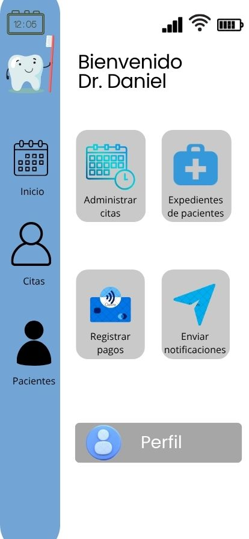
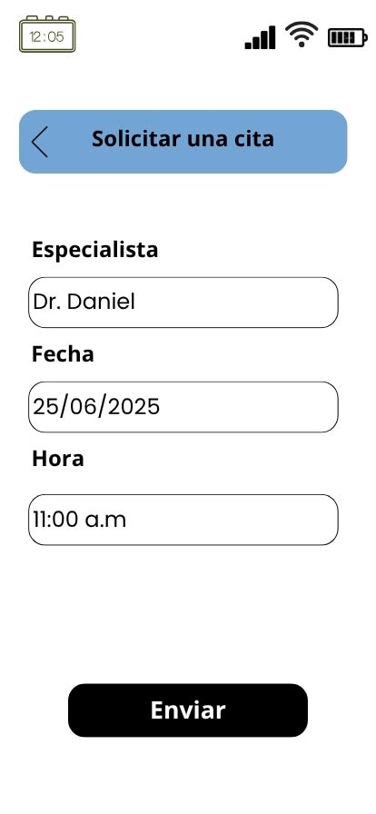
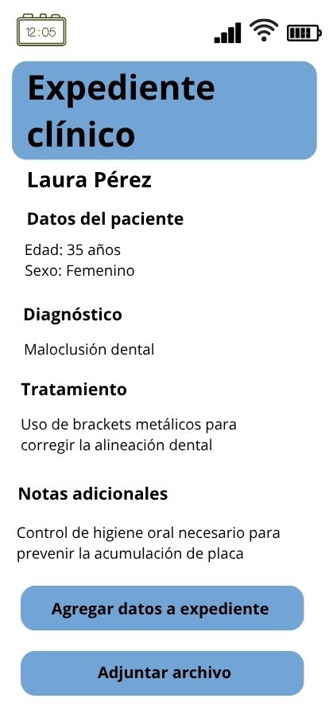

Mockups de la aplicación
Pantalla donde el dentista inicia sesion y muestra atajos rápidos para navegar una vez iniciada la sesión.
>Pantalla donde el dentista puede agendar cita para un paciente.
>Pantalla que muestra el historial clínico del paciente con diagnósticos y tratamientos.
>